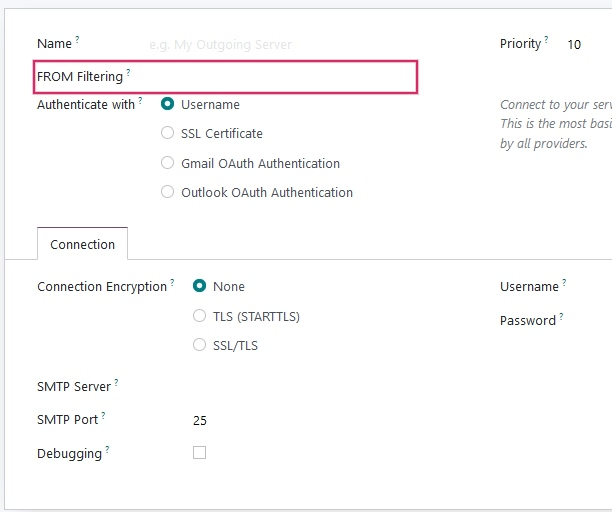
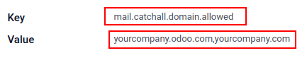

Enviar y recibir correos electrónicos en Odoo con un servidor de correo electrónico¶
Usuarios de Odoo en línea o Odoo.sh¶
Dado que Odoo configura sus propios servidores de correo electrónico para la base de datos, los correos electrónicos entrantes y salientes funcionan de inmediato. Por lo tanto, los clientes que utilizan Odoo en línea u Odoo.sh no necesitan configurar nada.
A menos que se requiera un servidor de correo externo para enviar grandes lotes de correos masivos, solo utilice la base de datos estándar de Odoo en línea, ya que se configuró previamente para enviar correos electrónicos.
Importante
El servidor de Odoo tiene un límite diario de correos electrónicos para prevenir abusos. El límite predeterminado es de 200 correos electrónicos enviados por día para bases de datos con una suscripción Enterprise. Puede aumentar este límite bajo ciertas condiciones. Consulte las preguntas frecuentes o contacte al equipo de soporte para obtener más información.
Alcance de esta documentación¶
Este documento se enfoca principalmente en bases de datos de Odoo con alojamiento local que no se benefician de una solución inmediata para enviar y recibir correos electrónicos en Odoo, a diferencia de las bases de datos de Odoo en línea y Odoo.sh. En el caso de las bases de datos con alojamiento local, se deben configurar los servidores de correos entrantes y salientes.
Las siguientes secciones contienen información sobre cómo integrar un servidor de correo electrónico externo con Odoo.
Advertencia
Odoo en línea y Odoo.sh son muy recomendables si no hay nadie en la empresa que gestione los servidores de correo electrónico. En estos tipos de alojamiento de Odoo, el envío y recepción de correos electrónicos funciona de inmediato y lo monitorean profesionales. Sin embargo, una empresa puede utilizar su propio servidor de correo electrónico si quiere gestionar la reputación del servidor de correo electrónico ellos mismos. Consulte Configurar registros DNS para enviar correos electrónicos en Odoo para obtener más información.
Notificaciones predeterminadas del sistema¶
Los documentos en Odoo (como una oportunidad de CRM, una orden de venta, una factura, etc.) cuentan con un hilo de conversación denominado chatter.
Cuando un usuario de la base de datos publica un mensaje en el chatter, este mensaje se envía por correo electrónico a los seguidores del documento como una notificación (excepto al remitente). Si un seguidor contesta el mensaje, la respuesta actualiza el chatter y Odoo retransmite otra respuesta a los seguidores como una notificación. Los mensajes de respuesta al chatter de parte de usuarios o usuarios externos aparecerán en el chatter de su respectivo correo electrónico, o como el nombre que aparece en su registro de contacto.
Estas notificaciones se envían mediante una dirección «de» predeterminada. Para más información consulte Utilizar una dirección de correo electrónico predeterminada.
Gestionar mensajes salientes¶
En Odoo, como administrador del sistema vaya a y habilite la opción servidores de correo electrónico personalizados y haga clic en guardar. Después, seleccione servidores de correo electrónico saliente y haga clic en crear para crear un nuevo registro de servidor de correo saliente en Odoo. Utilice los datos SMTP del servidor de correo electrónico externo como referencia. Una vez que complete toda la información, haga clic en probar conexión.
Ver también
Nota
La capacidad de entrega mejorará si se asegura de que el dominio saliente tenga configurado elementos como SPF, DKIM y DMARC en el DNS. Consulte Configure los registros DNS para enviar correos en Odoo para obtener más información.
Restricción del puerto¶
Tenga en cuenta que el puerto 25 se bloquea por razones de seguridad en las plataformas de Odoo en línea y Odoo.sh. Intente usar los puertos 465, 587 o 2525 en su lugar.
Utilizar una dirección de correo electrónico «De» predeterminada¶
En ocasiones, la dirección «De» (saliente) puede pertenecer a un dominio diferente, y esto puede ser un problema.
Por ejemplo, si un cliente con la dirección de correo electrónico mary@cliente.ejemplo.com responde a un mensaje, Odoo tratará de redistribuir ese mismo correo electrónico a los demás suscriptores del hilo. Sin embargo, si el dominio cliente.ejemplo.com prohíbe este tipo de uso por motivos de seguridad, el correo electrónico que Odoo trata de redistribuir será rechazado por los servidores de correo electrónico de algunos de los destinatarios.
Para evitar ese problema, Odoo envía todos los correos electrónicos que utilizan una dirección «De» desde el mismo dominio autorizado.
Puede acceder a los parámetros del sistema al activar el modo de desarrollador e ir al menú .
Para forzar la dirección de correo electrónico de la que se envían correos, debe establecer una combinación de las siguientes claves en los parámetros de sistema de la base de datos:
mail.default.from: acepta la parte local o una dirección de correo electrónico completa como valor.mail.default.from_filter: acepta un nombre de dominio o una dirección de correo electrónico como valor.
Nota
mail.default.from_filter solo funciona con configuraciones odoo-bin o con el servidor de correo electrónico predeterminado de Odoo. De lo contrario, puede establecer este parámetro mediante el campo from_filter en ir.mail_server.
El campo puede ser un nombre de dominio, una dirección de correo electrónico completa o puede permanecer vacío. Si la dirección de correo electrónico del remitente no coincide con el filtro establecido, entonces el correo electrónico se encapsulará mediante una combinación de los dos parámetros del sistema: mail.default.from y mail.catchall.domain.
Example
En el siguiente ejemplo, la combinación de los dos parámetros de sistema (mail.default.from y mail.catchall.domain) remplaza la dirección de correo electrónico «De». Esta es la configuración predeterminada de notificaciones en Odoo: “Admin” <admin@ejemplo.com> => “Admin” <notificaciones@miempresa.com>.
Es decir, si la dirección de correo electrónico del autor no coincide con mail.default.from_filter, la dirección de correo electrónico se cambia por mail.default.from (si contiene una dirección de correo electrónico completa) o una combinación de mail.default.from y mail.catchall.domain.
Si from_filter contiene una dirección de correo electrónico completa, y si mail.default.from es igual a la dirección, entonces todas las direcciones de correo electrónico que son diferentes a mail.default.from se encapsularán en mail.default.from.
Utilizar el filtro «De» en un servidor de correo electrónico saliente¶
El campo filtro DE le permite utilizar un servidor de correo electrónico saliente en específico según la dirección de correo electrónico De o el dominio por el que Odoo envía correos electrónicos. Puede utilizar este ajuste para mejorar la entrega o la tasa de éxito de envío de los correos electrónicos que se envían desde la base de datos. También puede establecer el campo filtro DE para enviar coreos electrónicos desde distintos dominios en un entorno multiempresa. Puede acceder a este campo en Odoo en .
Cuando se envía un correo electrónico desde Odoo mientras el campo de filtro DE está establecido, se elige un servidor de correo electrónico según la siguiente secuencia:
Primero, Odoo busca un servidor de correo electrónico con el mismo valor de filtr DE que el valor De (dirección de correo electrónico) definido en el correo electrónico saliente. Por ejemplo, si el valor De (dirección de correo electrónico) es
test@ejemplo.com, solo se obtienen los servidores de correo electrónico cuyo valor de filtro DE es igual atest@example.com.Sin embargo, si no se encontraron servidores de correo electrónico que utilicen el valor De, entonces Odoo buscara un servidor de correo electrónico que tenga el mismo dominio que el valor De (dirección de correo electrónico) definida en el correo electrónico saliente. Por ejemplo, si la dirección de correo electrónico De es
test@ejemplo.com, solo se obtienen los servidores de correo electrónico cuyo valor de filtro DE sea igual aejemplo.com.
Si no se encontraron servidores de correo electrónico después de comprobar el dominio, entonces Odoo obtiene todos los servidores de correo electrónico que no tengan establecido ningún valor o valores de filtro DE.
Si esta consulta no devuelve ningún resultado, entonces Odoo realiza una búsqueda de un servidor de correo electrónico que utilice el parámetro de sistema: mail.default.from. Primero, la dirección de correo electrónico indicada intenta buscar una coincidencia con un servidor de correo electrónico, y posteriormente el dominio intenta encontrar una coincidencia. Si no se encuentra ningún servidor de correo electrónico, Odoo devuelve el primer servidor de correo electrónico (según la prioridad).
Nota
Si se encuentran varios servidores de correo electrónico, entonces Odoo utiliza el primero según su prioridad. Por ejemplo, si hay dos servidores de correo electrónico, uno con prioridad de 10 y el otro con prioridad de 20, entonces el servidor de correo electrónico con prioridad de 10 es el que se utiliza primero.
Configurar distintos servidores dedicados para correos masivos y transaccionales¶
En Odoo, un servidor de correo electrónico separado se puede utilizar para correos electrónicos transaccionales y correos masivos. Por ejemplo: utilice Postmark o SendinBlue para correos transaccionales, y Amazon SES, Mailgun, SendGrid o Mailjet para correos masivos.
Importante
Ya se configuró un servidor de correo electrónico saliente. No cree uno alternativo a menos que necesite usar un servidor de correo electrónico saliente externo por razones técnicas.
Para hacerlo, primero active el modo de desarrollador y luego vaya a . Ahí, cree dos ajustes de servidores de correo electrónico saliente: uno para los correos electrónicos transaccionales y el otro para el servidor de correo masivo. Asegúrese de darle prioridad al servidor transaccional al asignarle un número de prioridad menor.
Ahora, vaya a , habilite la opción Servidor dedicado y elija el servidor de correo electrónico adecuado. Con estos ajustes, Odoo utiliza el servidor con la menor prioridad para correos electrónicos transaccionales y el servidor que seleccionó para correos masivos. Tome en cuenta que, en este caso, debe establecer los registros del Convenio de remitentes (SPF) para incluir ambos servidores, el de correos transaccionales y el de correos masivos.
Gestionar mensajes entrantes¶
Odoo utiliza seudónimos de correo electrónico genéricos para recuperar los mensajes entrantes.
Los mensajes de respuesta a mensajes que se enviaron desde Odoo se enrutan a su hilo de conversación original (y a la bandeja de entrada de todos los seguidores) mediante el seudónimo del modelo si lo hay, o mediante el seudónimo catchall (catchall@). Las respuestas a mensajes de modelos que no tienen un seudónimo personalizado utilizarán el seudónimo catchall (
catchall@miempresa.odoo.com). Sin embargo, la dirección catchall no cuenta con acciones adicionales como otros seudónimos, solo se utiliza para recolectar respuestas.Los mensajes devueltos se utilizan como ruta de retorno. Esto es especialmente útil en la aplicación Marketing por correo electrónico de Odoo. En este caso, los rebotes se excluyen de acuerdo a si el correo ha sido devuelto demasiadas veces (5) en el último mes y si las devoluciones tienen una semana de separación entre ellas. Esto se hace para evitar agregar a alguien a la lista negra debido a un error en el servidor de correo. Si se cumplen estas condiciones, entonces el correo electrónico se considera inválido y se agrega a la lista negra. Se agrega una nota de registro en el contacto, en la sección direcciones de correo electrónico incluidas en la lista negra en el menú de configuración de Marketing por correo electrónico.
Los mensajes devueltos en el chatter (fuera de Marketing por correo electrónico) tendrán un sobre rojo que indica que la entrega falló. Esto puede ser útil para saber que una orden de venta o una factura no llegó a su destino final.
Mensajes originales: varios objetos empresariales tienen su propio seudónimo para crear nuevos registros en Odoo a partir de correos electrónicos entrantes:
Canal de ventas (para crear leads u oportunidades en la aplicación CRM de Odoo).
Canal de soporte (para crear tickets en la aplicación Servicio de asistencia de Odoo)
Proyectos (para crear nuevas tareas en la aplicación Proyecto de Odoo)
Puestos de trabajo (para crear candidatos en la aplicación Reclutamiento de Odoo)
Puede haber varios métodos para buscar correos electrónicos según sus servidores de correo. El método más sencillo y recomendado es gestionar una dirección de correo electrónico por seudónimo de Odoo en su servidor de correo.
Cree las direcciones de correo electrónico correspondientes en el servidor de correo electrónico (catchall@, bounce@, ventas@, etc.).
Establezca el nombre del dominio del seudónimo en . Cambiar el dominio del seudónimo cambiará el dominio de catchall de la base de datos.
Si el tipo de alojamiento de la base de datos es Odoo local, cree un servidor de correo entrante en Odoo para cada seudónimo. Puede crear un nuevo servidor de correo entrante en . Complete el formulario según los ajustes del proveedor de correo electrónico. Deje el campo acciones a realizar en los correos entrantes en blanco. Una vez que complete toda la información, haga clic en PROBAR Y CONFIRMAR.

Si el tipo de alojamiento de la base de datos es Odoo en línea u Odoo.sh, recomendamos redirigir o reenviar los mensajes entrantes al nombre de dominio de Odoo en lugar de al servidor de correo externo. De esta forma, recibirá los mensajes entrantes sin retrasos. Debe establecer redirecciones para todas las direcciones de correo electrónico al nombre de dominio de Odoo en el servidor de correo electrónico (por ejemplo,
catchall@midominio.extacatchall@miempresa.odoo.com).
Puede personalizar todos los seudónimos en Odoo. Los seudónimos de objeto se pueden editar desde su respectiva vista de configuración en .
Para editar los seudónimos de catchall y de rebote, primero active el modo de desarrollador. Luego, vaya a para personalizar los seudónimos (mail.catchall.alias y mail.bounce.alias), estos cambios se deben de realizar antes de comenzar a usar la base de datos en producción. Si un cliente contesta un mensaje después de hacer un cambio, el sistema no reconocerá el seudónimo anterior y no recibirá la respuesta.
De forma predeterminada, se obtienen los mensajes entrantes cada 5 minutos en bases de datos de Odoo con alojamiento local.
Nota
Puede cambiar este valor en el modo de desarrollador. Vaya a y busque Correo: Servicio de Fetchmail.
Parámetros del sistema que previenen bucles de retroalimentación¶
Hay dos parámetros del sistema que ayudan a prevenir los bucles de correo electrónico en Odoo. Se incluyeron estos parámetros en Odoo 16 para prevenir que los alias crearan demasiados registros y así prevenir los bucles de retroalimentación en la direcciones de correo electrónico catch-all. Están presentes en las bases de datos pero no en los Parámetros de Sistema. Para sobrescribir los siguientes valores predeterminados, debe agregarlos.
Los dos parámetros de sistema son:
mail.gateway.loop.minutes(120 minutos de forma predeterminada)mail.gateway.loop.threshold(20 minutos de forma predeterminada)
Agregue estos campos en Odoo activando primero el modo desarrollador, y luego vaya a . Cambie el valor de esos parámetros como lo necesite.
Cuando recibe un correo electrónico en la base de datos de Odoo en la dirección de correo catchall o en cualquier otro alias, Odoo revisa el correo que recibió para el periodo de tiempo especificado en el parámetro de sistema mail.gateway.loop.minutes. Si el correo recibido se envió a un alias, entonces Odoo referenciará el parámetro de sistema mail.gateway.loop.threshold y determinará el valor como el número de registros que este alias tiene permitido crear en el periodo de tiempo especificado (valor de mail.gateway.loop.minutes).
Además, cuando recibe el correo en la dirección catch-all, Odoo referenciará los correos recibidos en la base de datos durante el periodo de tiempo establecido (así como lo establece el valor en el parámetro de sistema: mail.gateway.loop.minutes). Entonces, Odoo determinará si alguno de los correos que recibió coincide con el correo que se recibe durante el periodo de tiempo especificado, y eso evitará que ocurra un bucle de retroalimentación si se detecta un correo duplicado.
Permitir el parámetro del sistema de seudónimo del dominio¶
Los seudónimos entrantes se configuran en la base de datos de Odoo para crear registros al recibir correos. Para ver los seudónimos configurados en una base de datos de Odoo, primero active el modo de desarrollador. Después vaya a .
El parámetro mail.catchall.domain.allowed del sistema, establecido con valores de dominio de seudónimo permitidos y separados por comas se encarga de filtrar de forma correcta los correos dirigidos a cada seudónimo. Configurar los dominios en los que los seudónimos pueden crear un ticket, lead, oportunidad y otras opciones elimina falsos positivos donde están presentes las direcciones de correo electrónico con el seudónimo de prefijo solamente (no el dominio).
En algunos casos, se han hecho coincidencias en la base de datos de Odoo cuando se recibe un correo electrónico con el mismo prefijo de alias y un dominio diferente en la dirección de correo electrónico entrante. Esto ocurre en las direcciones de correo electrónico del remitente, destinatario y CC de un correo electrónico entrante.
Example
Cuando Odoo recibe correos electrónicos que tienen el nombre de seudónimo prefijo comercial en la(s) dirección(es) de correo electrónico del remitente, destinatario, o CC (por ejemplo, commercial@gmail.com, commercial@odoo.net), la base de datos falsamente trata el correo electrónico como el alias completo comercial (con un dominio diferente), y por lo tanto, crea un ticket/lead/oportunidad/etc.
Para agregar el parámetro del sistema mail.catchall.domain.allowed primero debe activar el modo de desarrollador. Después vaya a y haga clic en Crear. Después escriba mail.catchall.domain.allowed en el campo clave.
Después, para el campo Valor agregue el o los dominios separados por comas. Guarde de forma manual y el parámetro de sistema se activará de forma automática.
